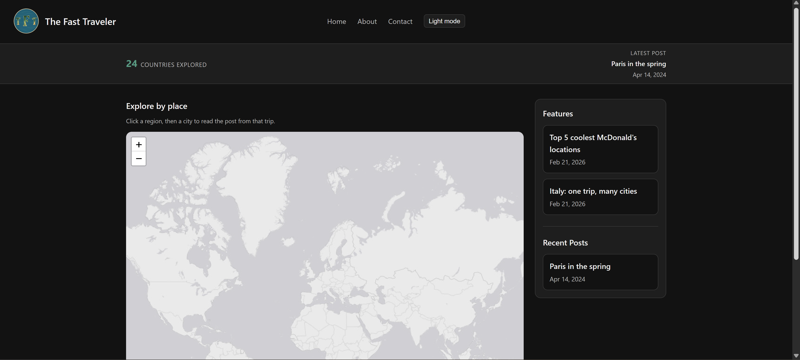
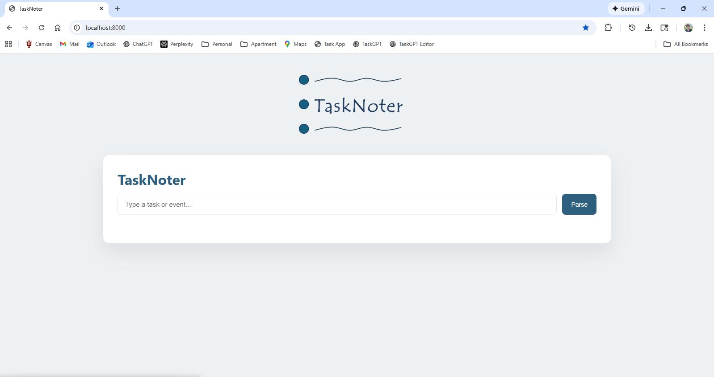
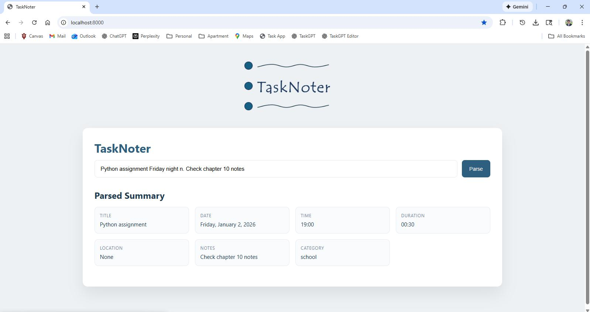

Hi, I'm
Bridging Technology & Business
Kelley School of Business, May 2026 · Incoming Consultant at Logan Consulting
Recent graduate of Indiana University's Kelley School of Business (GPA 3.80) with majors in Information Systems, Business Analytics, and International Business - including a semester abroad in Berlin. I build things at the intersection of technology and business - AI-assisted tools, Power BI dashboards, automated ordering systems - and I'm drawn to roles where systems thinking and data drive real decisions. Joining Logan Consulting in August 2026 as an Incoming Management Consultant, I'll be helping organizations implement and optimize manufacturing and business software to drive real operational value.
B.S. in Business - Information Systems · Business Analytics · International Business
Bloomington, IN · GPA: 3.80 / 4.00
Incoming Management Consultant
Chicago, IL
Product Analyst Intern
Rosemont, IL
Teaching Assistant & Peer Tutor - K201
Indiana University, Bloomington
VP - Professional Development
Indiana University, Bloomington
VP - Information Technology & Marketing
Bloomington, IN

Personal Project - Founder · Visit Site
A map-driven travel blog where you click a continent, zoom into a city, and click the pin on the map to read the post below. Built with vanilla JavaScript and no framework, using Leaflet and OpenStreetMap for the interactive map.


Personal Project - Founder
A local-first tool that converts plain English into structured tasks and calendar events, integrating directly with Outlook via a 3-phase deterministic parsing pipeline for single-input scheduling.
"Nick was able to dive right in, not merely with the utmost composure, but also with a hunger to learn -- which he did very quickly, easily grasping the nuances and rhythms of Agile/Scrum life. He's an astute student, a strong performer, a natural leader, and an absolute pleasure to work alongside. I recommend Nick, in the strongest possible terms, for any Product Ownership or Analysis role."
"He required minimal direction and was able to independently take on analyst responsibilities from the start. His strong analytical mindset allowed him to translate complex business challenges into clear, actionable requirements -- an essential skill in product development. Any organization would be fortunate to have him on their team."
Tracked earnings, expenses, miles driven, and time across 3-9 hour shifts to maintain a $22+/hr net income threshold. Managed customer conflicts and coordinated between restaurants and customers for orders exceeding $50.
Managed teams of up to 5, oversaw store operations including opening and closing, and tracked ingredient stock and labor costs - keeping labor below 18% of revenue at a location doing $1,000-$3,000 in daily sales.
Officiated youth soccer games (ages 7-15), managed disputes between coaches, players, and parents, and provided real-time coaching to improve player skills and maintain game flow.